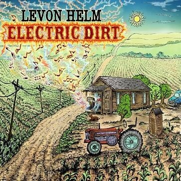

我的一个朋友，小的时候还不会形容一个人的时候，通过颜色来表示对这个人的感官。比如说这个红色的阿姨真好，我不喜欢我们灰色的数学老师。我的好朋友就像彩虹豆一样。
我只有二句，这个人好浓，这个人好淡。
我看到自己害怕的人，我觉得他们肯定是故意渲染了自己的感情，像一个无形的面罩戴在脸上，浓浓的，让我看不清楚他们，你不知道说什么，不知道做什么，好像一不小心就会打翻他的颜料盘。
而那些我觉得淡的人，他们很自然的把自己的真面目袒露在我的眼前，云淡风轻，很自然，没有情绪的波澜，你可以跟他说任何的话，而不担心会翻脸，会不小心戳破他心里的那个气球。
而最近这几天，楼上的房子一直装修，门口堆积很多的垃圾，早上七点钻孔机就山崩地裂的响，连我的床也在颤动。装修，真是一件害人又害己的事情，为什么要把自己的房子，弄的那么的浓？照片里的房子，淡淡的，看一眼就觉得美好。
我一直不喜欢太浓的东西，不爱化浓妆。很多场合面对提问的时候，我很想淡淡的说出我的想法，比如其实这个事情并不好，但是话到嘴边，我只有浓浓的说，恩，已经很不错了。很多时候面对别人的怀疑的时候，很想说其实那是你们不懂，没有资格说我的公司，没有资格评判我的音乐，但是我只有虚心的说，恩，我们努力还不够，要再加油。
去北京参加石头的音乐会，很大的牌场，威武的帝王庙，出席的都是超级的大腕，石头站在台上，说很多感谢的话，流很多激动的眼泪。那一刻我觉得他是一个浓的人，但是在后台我们抱在一起哭的时候，泪水冲掉了我的睫毛膏，也冲掉附在他脸上的粉。那时候我觉得我们变淡了，变的真实了。
你是浓人，还是淡人？